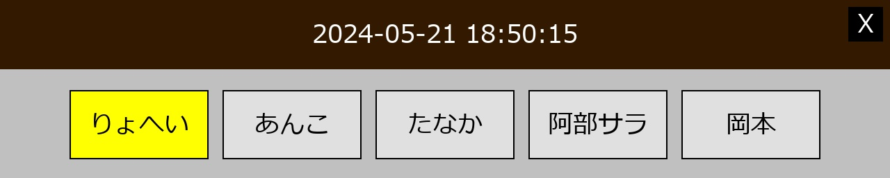

インストール
ステップ1
最新バージョンのPythonをダウンロードしてください。
ステップ2
インストールします。「Add python.exe to PATH」のチェックボックスを必ずチェックしてください。これによりPythonを正しく実行できます。

ステップ3
installer.batを実行します。これにより、すべての依存関係がTimecardディレクトリにインストールされます。
使い方
スタッフリストの作成
Timecardフォルダ内のアドミン.pyプログラムを開き、スタッフメンバーを名前で追加します（英字と日本語の文字が使用可能です）。
プログラムの起動
タイムカード.pyファイルを開きます。
スタッフリストに登録された各スタッフはここにボタンとして表示されます。出勤していないスタッフは薄い灰色で表示され、出勤しているスタッフは黄色でハイライトされます。現在時刻は画面上部に表示されます。Escキーを押すか、画面右上の閉じるボタンをクリックして終了できます。
保存
出勤/退勤後、時間は即座にExcelに保存されます。一日に一回の出勤と退勤の記録ができます。一日に複数の出勤/退勤は、その日の前の記録を上書きします。このプログラムは、プログラムを閉じたり再起動したりしてもスタッフの出勤/退勤状況を記録し続けます。
総勤務時間の計算
これはアドミン.pyプログラムで行えます。管理メニューで「5」を入力します。これにより、各日の総勤務時間と月の総勤務時間が計算され、各ページの「E2」セルに記録されます。
記録へのアクセス
シフト時間の記録は、その年の月に対応するExcelファイルに保存されます（例: 5月の場合は5）。これらのExcelファイルはタイムカード.pyプログラムが各月に自動的に作成し、tc2_assetsフォルダに保存されます。
警告
このプログラムのファイル/フォルダを削除したり移動したりしないでください。これらのファイルをより便利な場所に置きたい場合は、デスクトップにショートカットを作成することをお勧めします。tc2_assetsフォルダ内のExcelファイルを変更しないようにしてください。変更する場合は、コピーを作成して変更してください。退社したスタッフはスタッフリストから削除されても、次の月のファイルには追加されませんが、Excelファイルのシートには残ります。